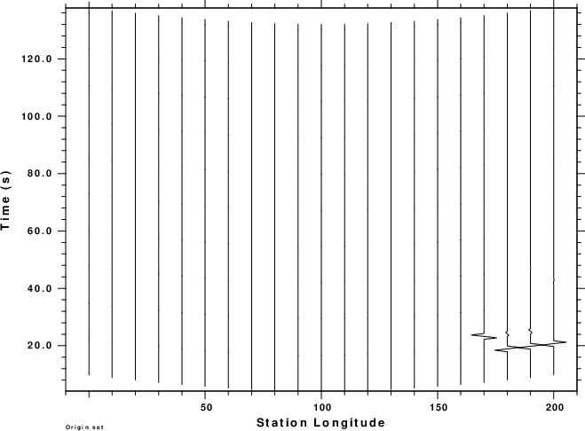
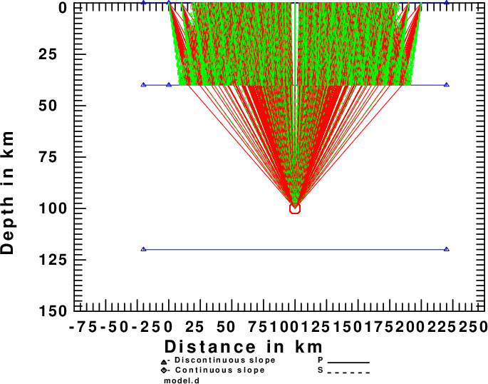
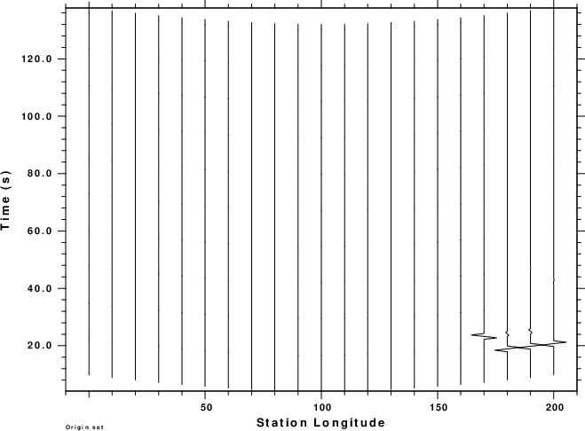
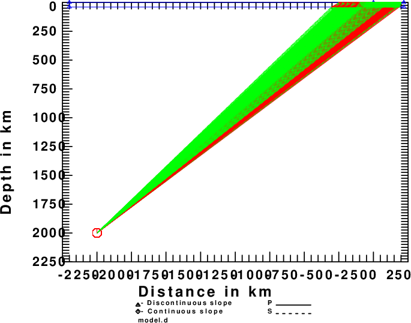
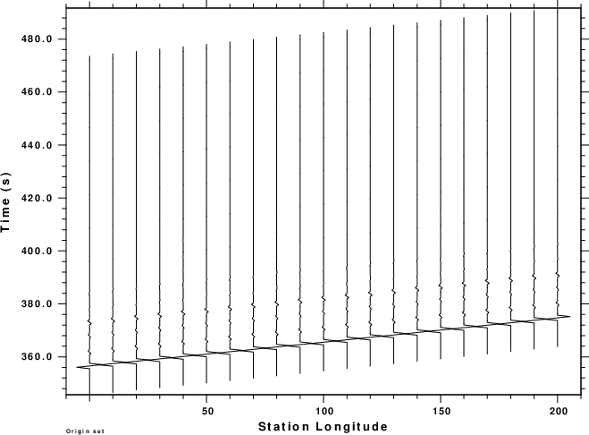

|
 |
 |
the purpose of this is to show how ray parameter filtering is applied using cpulse96 and then to discuss the implication.
Everything is run as in the Layer1 example, except that the there
are additional options applied to cpulse96, e.g.,
cpulse96 -V -p -l 4 -EXF -DELAY 10 -PMIN 0.08 -PMAX 0.10 | f96tosac -B
Now consider the following plots
|
 |
There are two significant differences compared to the Layer1 example. This can be seen in the record sections
|
 |
|
This emphasizes the need to better approximate an incident plane wave.
To investigate both the ray parameter filtering and also the
improvement of the plane-wave approximation,
the source position was changed to be deeper and also farther away
from the array to give the desired
ray parameters. The command sequence is now
cprep96 -M model.d -d dfile -HS 2000 -XS -2000 -HR 0 -DOALL -DOCONV cseis96 -R > cseis96.out cpulse96 -V -p -l 4 -EXF -DELAY 10 -PMIN 0.08 -PMAX 0.10 | f96tosac -B cray96 -XMIN -2100 -XMAX 250 -ZMIN 0 -ZMAX 2100
The plots are
|
 |
|
 |
|
It is interesting now that arrivals of all of the receivers are similar. They only differ because of the moveout of the incoming signal across the array. Since the first time sample is delay seconds before the first arrival, an overlay of all traces relative to their beginning would show little difference [GSAC: plot relative overlay on].
This exercise has shown ray parameter filtering and also the need for a deep source to model plane waves. The horizontal position of that source is determined by trial and error.